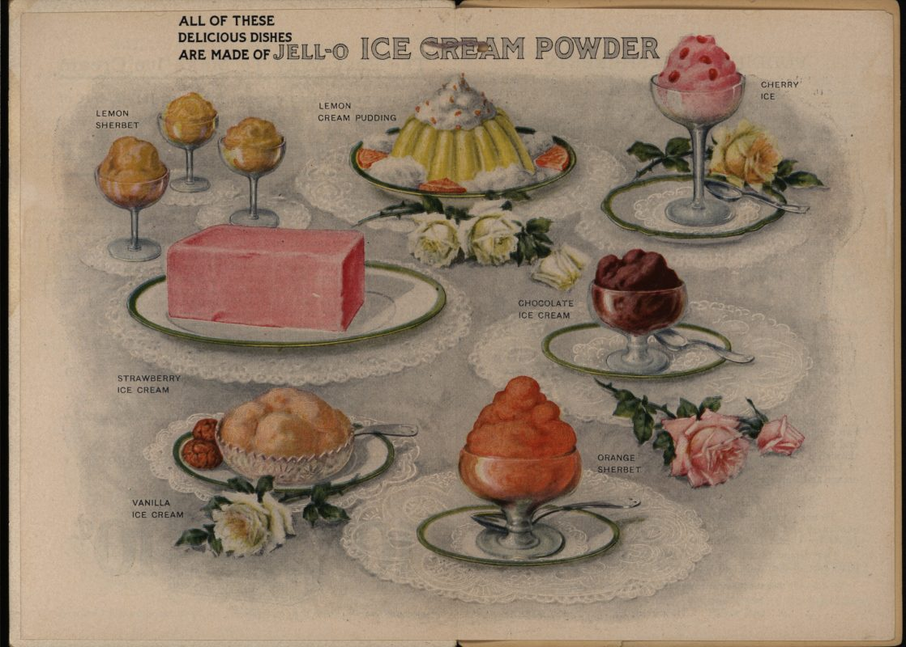
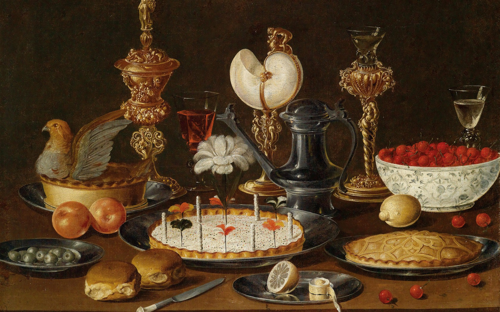

Sweets were fed to the gods in ancient Mesopotamia and ancient India and other ancient civilizations. Herodotus mentions that Persian meals featured many desserts, and were more varied in their sweet offerings than the main dishes. German army officer Helmuth von Moltke whilst serving in the Ottoman Empire noted the unusual presentation of courses with the sweet courses served between roasts and other savory dishes.
Dried fruit and honey were probably the first sweeteners used in most of the world, but the spread of sugarcane around the world was essential to the development of dessert. Sugarcane was grown and refined in India before 500 BC and was crystallized, making it easy to transport, by AD 500. Sugar and sugarcane were traded, making sugar available to Macedonia by 300 BC and China by AD 600. In the Indian subcontinent, the Middle East, and China, sugar has been a staple of cooking and desserts for over a thousand years.
Sugarcane and sugar were little known and rare in Europe until the twelfth century or later when the Crusades and then colonization spread its use. Europeans began to manufacture sugar in the Middle Ages, and more sweet desserts became available. Even then sugar was so expensive usually only the wealthy could indulge on special occasions. The first apple pie recipe was published in 1381. The earliest documentation of the term cupcake was in "Seventy-five Receipts for Pastry, Cakes, and Sweetmeats" in 1828 in Eliza Leslie's Receipts cookbook.
The Industrial Revolution in Europe and later America caused led to the mass-production of foodstuffs, including desserts, that could be processed, preserved, canned, and packaged. Frozen foods, including desserts, became very popular starting in the 1920s.
 